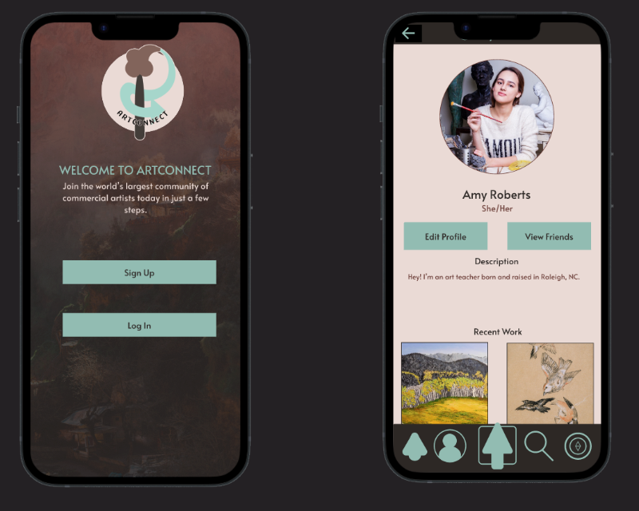
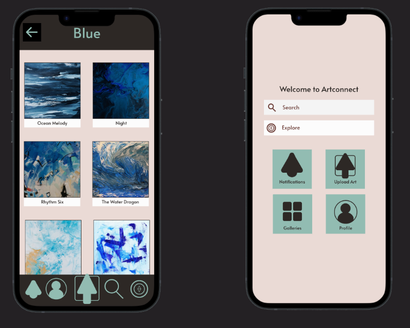
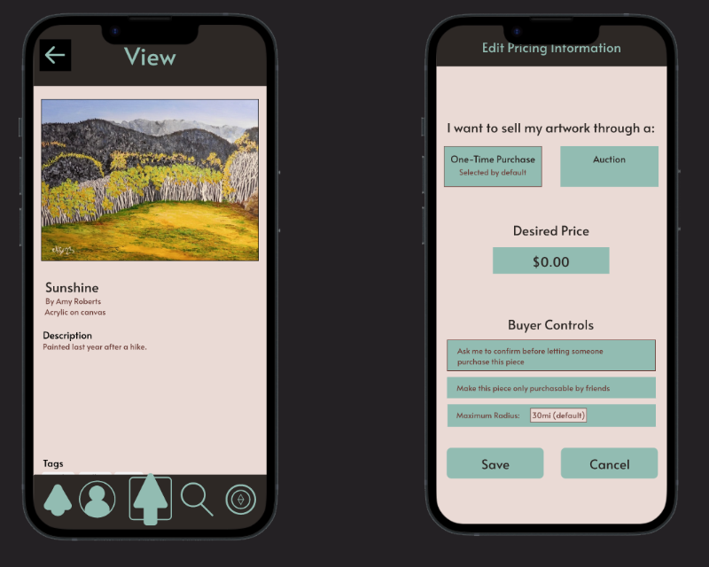

ArtConnect

-
Creation Date
November 2024
-
Technologies
Figma Prototyping
-
Link
No current social platform exists for artists to collaborate and connect with potential buyers in their area effectively. While social media apps are an option, they each come with hefty downsides. How can I make an app that supports local artists and fosters meaningful connections in a range of communities?
I designed an art platform prototype that focuses on local art communities, allowing artists to showcase their work, collaborate on projects, and connect with potential buyers in their area. The app emphasizes user-generated content and community-driven features to foster meaningful interactions and support local creativity. Since this project was the capstone for my UX design course, I focused mainly on making this app prototype fluid and intuitive to use, although since it's still a mockup, it doesn't have all the functionality of a real application. The app prototype is created entirely in Figma using the prototype feature and includes screens for discovering art in your community, sharing art to personal collections, selling your art through a flat sale or an auction, and connecting with other users.



This app prototype taught me a lot - not only about UX but also about the range of features that can be accomplished with Figma, a free tool. While it was a challenging project, it provided valuable experience in creating interactive prototypes and understanding the design process from concept to implementation. Looking back on it shows me how far I've come in my design skills and encourages me to continue working to become even better. Who knows - maybe Artconnect will become real someday.